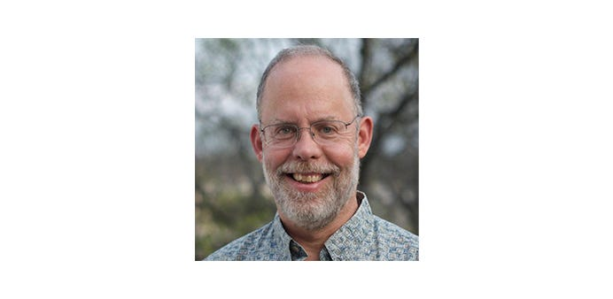

We spoke to Fen Labalme, CivicActions’ Chief Information Security Officer, about his long tenure at the company, his long standing interest in digital privacy, why keeping our clients like DSCA secure is so critical, and about the time he had beers with Bill Gates before anyone (including Fen) knew who he was!

What is your job at CivicActions? How long have you been with the company?
I am the Chief Information Security Officer at CivicActions and joined the company in May 2005 as part of an initial group alongside the founders. The company’s values of balance, openness and care then and now are in alignment with mine so continuing this collaboration is easy for me.
How did you come into this career and why focus on security?
Since my time as a student at MIT, I have been immersed in the issues surrounding privacy and security and my thesis, NewsPeek, helped provide the seed money for the MIT Media Lab. My early focus on privacy morphed into the need for security of personal, corporate and government information as technology, the internet and the world of social media have exploded. The tenets of privacy and security in a free and open source realm are core to CivicActions and I strive, alongside my colleagues, to incorporate them into our work.
Your work on security includes work for our client the Defense Security Cooperation Agency (DSCA). Why is working on the security for this project meaningful to you?
We have a customer in the Defense Security Cooperation Agency (DSCA) whose mission is to support organizations and efforts to assist security cooperation professionals to collaboratively find ways to avoid conflict. As a site sponsored by the DoD hosting multiple cohorts of foreign nationals, it presents a unique collection of security challenges. Maintaining confidential communications, information integrity, and continuous accessibility is key to ensuring that the system can perform its mission and help prevent conflict.
In your experience, what is the most important aspect of your job?
Increasing security awareness within our company and for our clients has to be job #1. To that end, I am focused on modernizing the antiquated, check box-style security and compliance methodologies currently being used by the bulk of our government clients that are making them neither more compliant nor secure. A system like OpenATO that we are currently developing at CivicActions will be at the vanguard of security-compliance technology as it streamlines Authority to Operate (ATO) processes, shortens turnaround time and makes our online world more secure.
What do you find unique about the company culture at CivicActions?
Our culture at CivicActions is people-centered and value-centric and those values include balance, openness and care — care that extends to each other as well as our clients, at work and at home. These values mattered to me long before I found CivicActions and in finding CivicActions, I reconnected with home.
On a lighter note, what are some fun facts that people may not know about you?
Short list: I attended over 200 Grateful Dead shows (Jerry era). I founded the MIT Ultimate Frisbee Club and at one time, was ranked fourth in the world in disc golf. I had beers with Bill Gates before anyone (including me) knew who he was and was on a first-name basis with Bob Kahn and Vint Cerf, who co-wrote the Internet Protocol (IP) that led to the formation of the Internet.